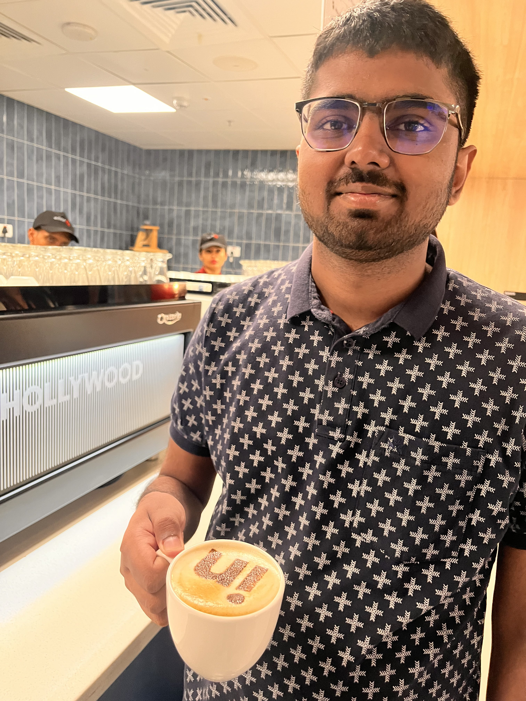

ChEABLOGS
Utsav Jha | LinkedIn
Hi, I am Utsav Jha, a 4th year BTech Chemical engineering student. I interned with LinkedIn, Bangalore in the summer of 2025.
Q:What was your motivation for the internship and what was the recruitment process like?
Just as everyone else, I too was very confused between multiple domains. Consulting, Finance, Core, Software, it all felt so overwhelming. Eventually, I started rejecting options, finally ending up with this decision. . I had a good CPI, but no PoRs, something that is quite important for consulting.. As far as finance was concerned, I didn't find it that interesting. I was only left with core and software. I was shortlisted for companies like BASF (through prof. Nabar) and HUL (PT cell), but was rejected in both. Fortunately, I had devoted a large part of my 2nd year summer break to DSA, which is one of the most important topics for software roles. This is especially the case in Big MNCs. I gave OAs for day 1 companies like Uber, Goldman Sachs and Microsoft but did not have any luck in these companies, due to their preference for CSE students. Linkedin came to campus on week 2 and was open for all branches. Around 550 students gave the OA, which was completely based on DSA. It consisted of 3 questions and was 1.5 hours long. Only students who could solve all 3 questions were shortlisted for an interview. The interview consisted of 2 rounds (both of which were virtual) : 1. Technical round : I was asked 2 DSA questions in a 50 minute interview. The first one was an easy leetcode question (move zeros to right). The second one was leetcode medium-hard (based on topological sort). 2. I was immediately informed that I had passed the technical round and in just 5 mins I received a link for the HM (Hiring manager) round. Mind you, this is quite different from an HR round. Here, the interview was taken by a senior manager, who was once himself a software engineer. This interview lasted for about 30 mins and was very chill. The manager wanted to know about what projects I did and where I showed my leadership skills. All 3 students who cleared the technical round cleared the HM round as well. As far as preparation is concerned, I focused mostly on DSA : Blind 75 sheet (solved it completely), A-Z Striver sheet (I did around 100 questions mostly from sliding window, DP, Graphs). I didn't do any CP but focused mainly on leetcode.
Q: Can you explain your role in the internship? What jobs were you expected to perform and what projects were you involved with?
My role was as a software engineering intern. All the interns, including myself, were assigned very impactful projects. Most of the interns sent code to production with real people using their software in the first few weeks itself! Now, most software related work tends to be just glorified CRUD, but my project didn't involve any backend/frontend part. I worked on an internal tool that is going to be used by other developers at LinkedIn. This was much more challenging than CRUD based projects, and involved a deeper understanding of the codebase. I had to write tests and optimize my code using LinkedIn built tools. Though I cannot reveal the exact details of the project, I can truly say that it was a great learning experience, very different from traditional software projects.
Q: What were the most exciting aspects of the internship? What were the most challenging aspects?
First things first, it was the accommodation. All the interns were provided accommodation in a 5 star hotel in Bangalore for the entire duration of the internship! As a result, we didn’t have to look for a PG or flat. This was truly something unique about our experience at LinkedIn. Everything, from food to laundry to travel was covered by the company. There were events for interns almost every week. These included VP talks, perfume making, Lego building sessions, aqua zumba and even full day events at Dave & Busters. There was no dull week in the entire intern duration. Apart from this, we were free to decide our approach towards the project. Office hours and leaves were entirely up to us, as long as we delivered what was expected. Having said all of this, there were a fair share of challenges too. Personally, my project felt quite complicated and unconventional in the beginning. Part of it was due to my lack of software development knowledge and non-CSE background. Eventually though, I did learn from my mistakes and ended up delivering the project.
Q: What was the culture like in your office? How did the company treat the interns and what were you provided with?
The culture in my office was super cool. We got free breakfast, lunch, snacks and also unlimited access to Barista for all our coffee cravings. As I said before, the company treated interns really well with the hotel accommodation and intern events. There was no ego hierarchy in the office. Despite being an intern, I could easily reach out to the senior folks who were always happy to help me out!
Q: What were your key learnings from the internship?
There are many things I learned : 1. I now have a renewed perspective of working with real software projects. I learned how to think and develop software for the final user, how to perform basic Software LLD design, and how to deploy code in such a complex ecosystem. 2. With AI right around the corner, coding was not even 10% of the challenge. For my project, my code was very interdependent on other teams. I even had to depend on engineers from the US. A large chunk of my time was spent collaborating with other engineers and getting things done.
Tips :
1. Leave your ego aside. Real world engineering is always full of surprises, which is why you should open your doors to learning new things everyday!
2. Never hesitate to reach out to any senior, be it in your team or in another team. Use your intern tag to the fullest. People are always glad to help you out!
3. Keep calm and enjoy during the internship! I myself was very stressed in the initial few weeks. Keep calm and understand that as an intern, you are allowed to make mistakes!